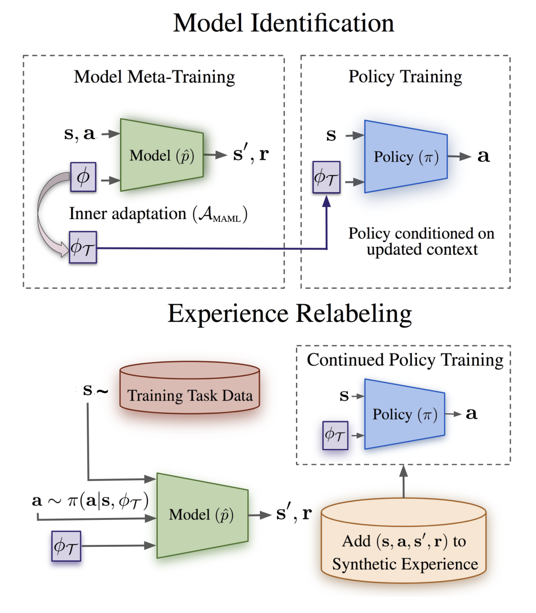
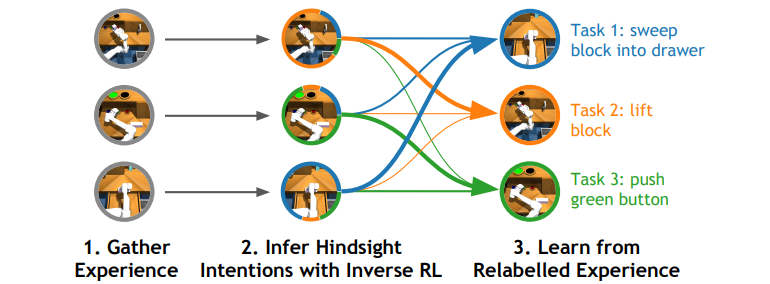
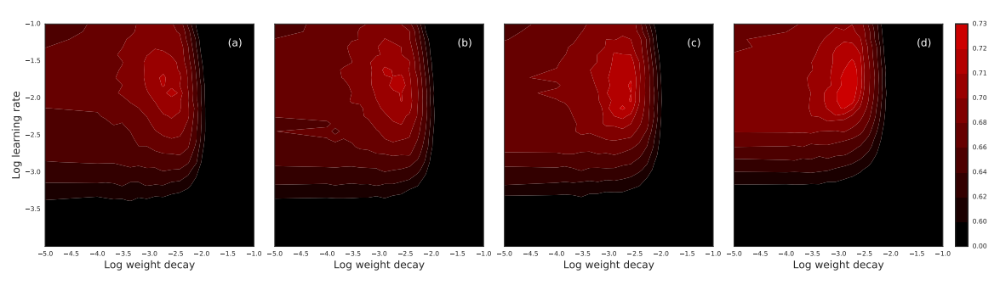
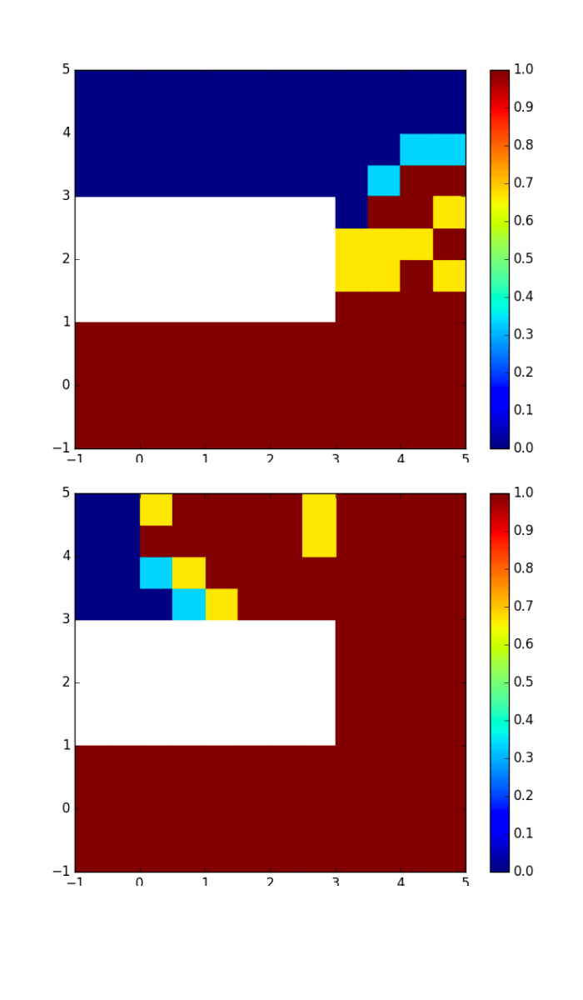
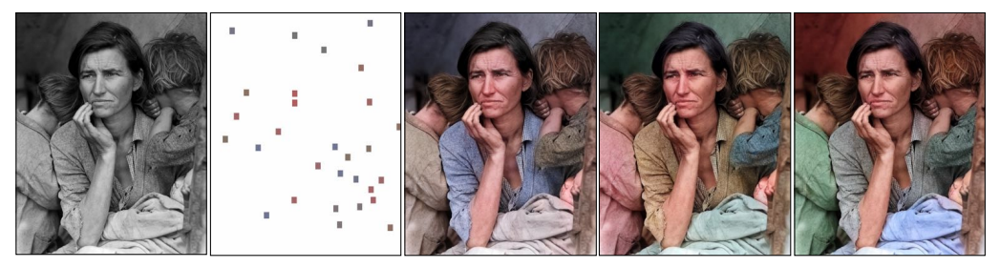
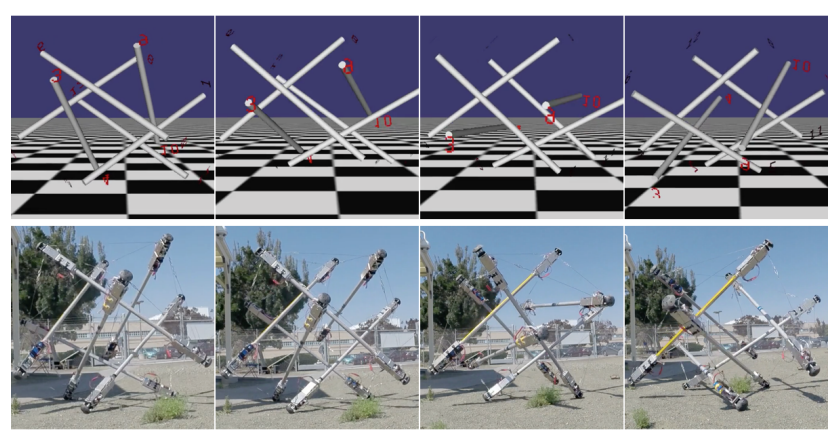

I am currently a PhD student in UC Berkeley advised by Professor Sergey Levine. Before starting my PhD program in Berkeley, I did the one year Google AI Residency program. Before joining Google, I studied computer science and statistics at University of California, Berkeley. During my undergraduate study, I worked with Professor Pieter Abbeel, Professor Sergey Levine and Professor Alexei Efros as a research assistant in the Berkeley Artificial Intelligence Research (BAIR) Lab.

Russell Mendonca*, Xinyang Geng*, Chelsea Finn, Sergey Levine
Reinforcement learning algorithms can acquire policies for complex tasks autonomously. However, the number of samples required to learn a diverse set of skills can be prohibitively large. While meta-reinforcement learning methods have enabled agents to leverage prior experience to adapt quickly to new tasks, their performance depends crucially on how close the new task is to the previously experienced tasks. Current approaches are either not able to extrapolate well, or can do so at the expense of requiring extremely large amounts of data for on-policy meta-training. In this work, we present model identification and experience relabeling (MIER), a meta-reinforcement learning algorithm that is both efficient and extrapolates well when faced with out-of-distribution tasks at test time. Our method is based on a simple insight: we recognize that dynamics models can be adapted efficiently and consistently with off-policy data, more easily than policies and value functions. These dynamics models can then be used to continue training policies and value functions for out-of-distribution tasks without using meta-reinforcement learning at all, by generating synthetic experience for the new task.

Benjamin Eysenbach*, Xinyang Geng*, Sergey Levine, Ruslan Salakhutdinov
Multi-task reinforcement learning (RL) aims to simultaneously learn policies for solving many tasks. Several prior works have found that relabeling past experience with different reward functions can improve sample efficiency. Relabeling methods typically ask: if, in hindsight, we assume that our experience was optimal for some task, for what task was it optimal? In this paper, we show that hindsight relabeling is inverse RL, an observation that suggests that we can use inverse RL in tandem for RL algorithms to efficiently solve many tasks. We use this idea to generalize goal-relabeling techniques from prior work to arbitrary classes of tasks. Our experiments confirm that relabeling data using inverse RL accelerates learning in general multi-task settings, including goal-reaching, domains with discrete sets of rewards, and those with linear reward functions.
Kristian Hartikainen, Xinyang Geng, Tuomas Haarnoja, Sergey Levine
In ICLR, 2020.
Reinforcement learning requires manual specification of a reward function to learn a task. While in principle this reward function only needs to specify the task goal, in practice reinforcement learning can be very time-consuming or even infeasible unless the reward function is shaped so as to provide a smooth gradient towards a successful outcome. This shaping is difficult to specify by hand, particularly when the task is learned from raw observations, such as images. In this paper, we study how we can automatically learn dynamical distances: a measure of the expected number of time steps to reach a given goal state from any other state. These dynamical distances can be used to provide well-shaped reward functions for reaching new goals, making it possible to learn complex tasks efficiently. We show that dynamical distances can be used in a semi-supervised regime, where unsupervised interaction with the environment is used to learn the dynamical distances, while a small amount of preference supervision is used to determine the task goal, without any manually engineered reward function or goal examples. We evaluate our method both on a real-world robot and in simulation. We show that our method can learn to turn a valve with a real-world 9-DoF hand, using raw image observations and just ten preference labels, without any other supervision.

Xinyang Geng, Lechao Xiao, Hossein Mobahi, Jeffrey Pennington
In ICML 2018 Workshop: Modern Trends in Nonconvex Optimization for Machine Learning
Recent advances in high-performance computing and the abundance of large labeled datasets have enabled machine learning practitioners to successfully develop and deploy deep learning models with enormous numbers of parameters. Owing to the large degree of overparameterization, it is perhaps surprising that in practice such models often generalize well. Indeed, identifying which types of large models will generalize well and which will generalize poorly remains an important research direction in the theory of deep learning. One recent proposal is that parameter configurations corresponding to “sharp” minima may generalize worse than those that correspond to “wide” minima. In this paper, we propose a computationally-efficient method for approximating a sharpness measure based on the mean curvature of the loss landscape near a critical point. We devise a new form of regularization for deep learning models based on this sharpness measure. Our experiments on fully connected networks and convolutional networks show that such regularization can significantly improve generalization performance.

Carlos Florensa*, David Held*, Xinyang Geng*, Pieter Abbeel
In ICML, 2018.
Reinforcement learning (RL) is a powerful technique to train an agent to perform a task; however, an agent that is trained using RL is only capable of achieving the single task that is specified via its reward function. Such an approach does not scale well to settings in which an agent needs to perform a diverse set of tasks, such as navigating to varying positions in a room or moving objects to varying locations. Instead, we propose a method that allows an agent to automatically discover the range of tasks that it is capable of performing in its environment. We use a generator network to propose tasks for the agent to try to accomplish, each task being specified as reaching a certain parametrized subset of the state-space. The generator network is optimized using adversarial training to produce tasks that are always at the appropriate level of difficulty for the agent, thus automatically producing a curriculum. We show that, by using this framework, an agent can efficiently and automatically learn to perform a wide set of tasks without requiring any prior knowledge of its environment, even when only sparse rewards are available.

Richard Zhang*, Jun-Yan Zhu*, Phillip Isola, Xinyang Geng, Angela S. Lin, Tianhe Yu, Alexei A. Efros
In SIGGRAPH 2017.
We propose a deep learning approach for user-guided image colorization. The system directly maps a grayscale image, along with sparse, local user “hints" to an output colorization with a Convolutional Neural Network (CNN). Rather than using hand-defined rules, the network propagates user edits by fusing low-level cues along with high-level semantic information, learned from large-scale data. We train on a million images, with simulated user inputs. To guide the user towards efficient input selection, the system recommends likely colors based on the input image and current user inputs. The colorization is performed in a single feed-forward pass, enabling real-time use. Even with randomly simulated user inputs, we show that the proposed system helps novice users quickly create realistic colorizations, and offers large improvements in colorization quality with just a minute of use. In addition, we demonstrate that the framework can incorporate other user “hints" to the desired colorization, showing an application to color histogram transfer.

Marvin Zhang*, Xinyang Geng*, Jonathan Bruce*, Ken Caluwaerts, Massimo Vespignani, Vytas SunSpiral, Pieter Abbeel, Sergey Levine
In ICRA, 2017.
Tensegrity robots, composed of rigid rods connected by elastic cables, have a number of unique properties that make them appealing for use as planetary exploration rovers. However, control of tensegrity robots remains a difficult problem due to their unusual structures and complex dynamics. In this work, we show how locomotion gaits can be learned automatically using a novel extension of mirror descent guided policy search (MDGPS) applied to periodic locomotion movements, and we demonstrate the effectiveness of our approach on tensegrity robot locomotion. We evaluate our method with realworld and simulated experiments on the SUPERball tensegrity robot, showing that the learned policies generalize to changes in system parameters, unreliable sensor measurements, and variation in environmental conditions, including varied terrains and a range of different gravities. Our experiments demonstrate that our method not only learns fast, power-efficient feedback policies for rolling gaits, but that these policies can succeed with only the limited onboard sensing provided by SUPERball’s accelerometers. We compare the learned feedback policies to learned open-loop policies and hand-engineered controllers, and demonstrate that the learned policy enables the first continuous, reliable locomotion gait for the real SUPERball robot.